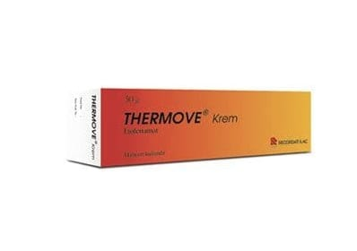

Thermove %10+%1 Krem, 50 g

Ne için kullanılır
KT · Bölüm 1THERMOVE, 50 g krem içeren alüminyum tüplerde ve karton kutu içerisinde kullanıma sunulmaktadır.
THERMOVE, etkin madde olarak etofenamat ve benzil nikotinat içerir.
Etofenamat, steroid olmayan (kortizonsuz) anti-romatik (romatizma tedavisi) ilaçlar grubundandır ve iltihap/inflamasyon giderici (anti-inflamatuvar) ve ağrı kesici (analjezik) özelliklere sahiptir.
THERMOVE, aşağıdaki durumların tedavisinde kullanılır: Kas-iskelet sistemine ait yumuşak dokuların uzun süreli romatizmal hastalıkları. • Kas romatizması • Donmuş omuz (omuz eklemi çevresinin iltihabi durumu) ile birlikte görülen kas sertliği • Lumbago, bel ağrısı • Siyatik siniri ağrısı • Eklem çevresindeki yumuşak dokunun iltihabi hastalıkları (tendinit, bursit) • Omurga veya eklemlerde, aşırı zorlanmaya ve erozyona bağlı olarak gelişen hastalıklar (spondiloz, osteoartrit, eklemlerde kireçlenme)